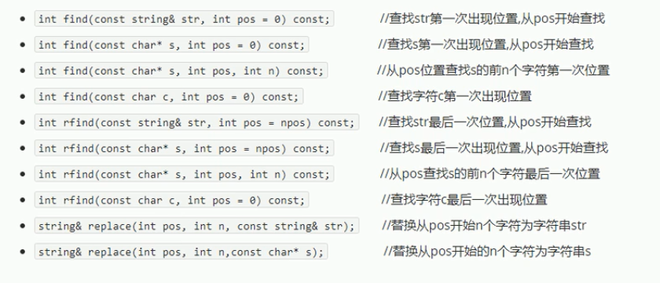

String
本质：string本质上是一个类
string和char*的区别：
特点：
string类内部封装了很多成员方法
例如：查找find，拷贝copy，删除delete，替换replace，插入insert
string管理char*所分配的内存，不同担心复制越界和取值越界等，有类内部进行负责
注意字符指针指向字符串，可以直接赋值
const char* s = "abfdhfdu";
char* q = "asdada"; //×
const int * p = &a; //√
string构造函数
string(); //创建一个空的字符串，例如：string str;
string(const char* s); //使用字符串s初始化
string(const string& str); //使用一个string对象初始化另一个string对象
string(int n, char c); //使用n个字符c初始化
const char* str = "hello world"; //如果是整型，要传地址
string s2(str);
string赋值操作
string str1,str2,str3;
string& operator=(const char* s); //char*类型字符串赋值给当前的字符串
str1 = "hello world";
string& operator=(const string &s);
str2 = str1;
string& operator=(char c); //字符赋值给当前的字符串
str3 = 'c';
string& assign(const char *s); //把字符串s赋给当前的字符串
str4 .assign("hello world")
string& assign(const cahr *s, int n); //把字符串s的前n个字符赋值给当前的字符串
str5.assign("hello world", 5);--->str5="hello"
string& assign(const string &s);
str6.assign(str5);
string& assign(int n, char c); //用n个字符c赋给当前字符串
str7.assign(10,'w');--->str7="wwwwwwwwww"
string字符串拼接
实现在字符串末尾拼接字符串
string str1 = "gg";
string& operator+=(const char* str);
str1 += "abcd";
string& operator+=(const c);
str1 +='e'
string& operator+=(const string& str);
string str2 = "qwer";
str1 += str2;
string str3 = "I"
string& append(const char *s);
str3.append("love");
string& append(const char *s, int n); //把字符串s的前n个字符连接到当前字符串结尾
str3.append("game over", 5);
string& append(const string &s);
str3.append(str2);
string& append(const string &s, int pos, int n); //字符串s从pos开始的n个字符连接到字符串结尾
str3.append(str2, 0, 3);
string查找和替换
查找：查找指定字符串是否存在
替换：在指定的位置替换字符串
int find(const string& str, int pos=0)const; //查找str第一次出现的额位置，从pos开始查找
string str1 = "abcdefg";
int pos = find("de"); //没有返回-1
int find(const char* s, int pos=0)const;
int find(const char* s,int pos, int n)const;

rfind() --- 从右往左查找
find() ---从左往右
string str1 = "abcdefgde";
int pos = find("de"); //3
pos = str1.rfind("de"); //7
string str1 = "abcdefg";
str1.replace(1, 3, "1111"); //a1111efg
string字符串比较
字符串比较是按字符的ASCLL码进行对比
返回 0 1 -1
int compare(const string &s)const ; //与字符串s比较
int compare(const char *s)const ;
str1.compare(str2);
主要用来比较两个字符串是否相等
string字符存取
char& operator[](int n);
char& at(int n);
string str = "qwerdf";
str.size();
str[0];
str.at(1);
str[0] = 'x';
str.at(1) = 'x';
string插入和删除
string& insert(int pos, const char* s);
string str = "hello";
str.insert(1,"111"); //h111ello
string& insert(int pos, const string& str);
string& insert(int pos, int n, char c); //在指定位置插入n个字符c
string& erase(int pos, int n = npos); //删除从pos开始的n个字符
str.erase(1, 3); //hello
string子串
从字符串中获取想要的子串
string substr(int pos=0, int n = npos)const; //返回由pos开始的n个字符组成的字符串
string str = "abcdef";
string subStr = str.substr(1,3); //bcd